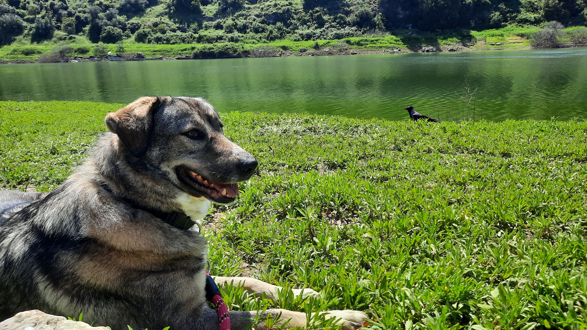
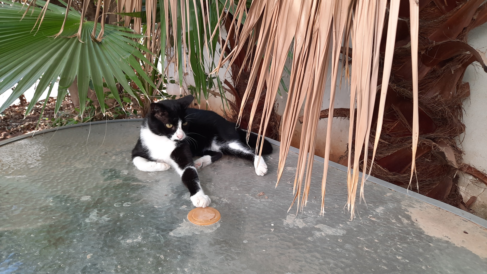
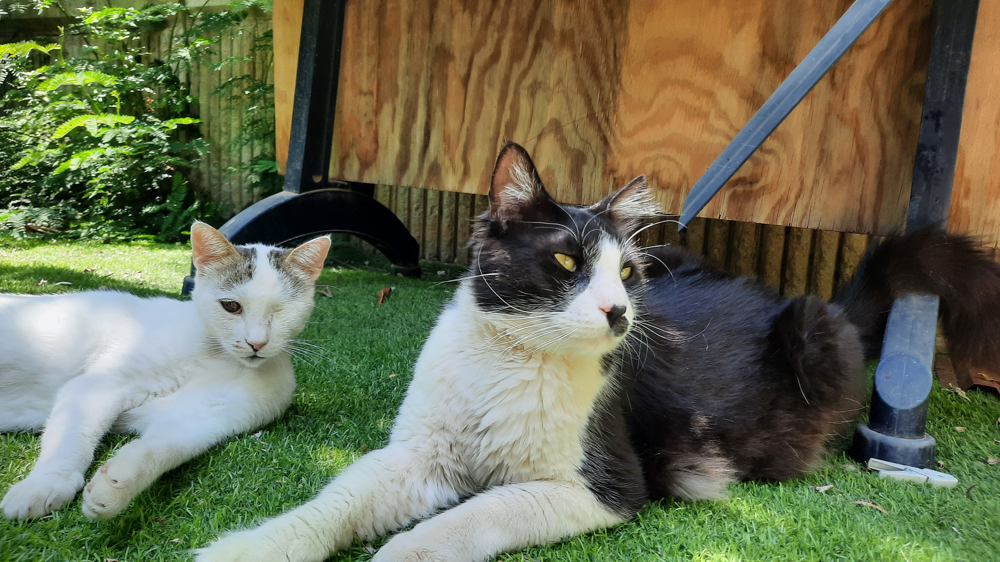
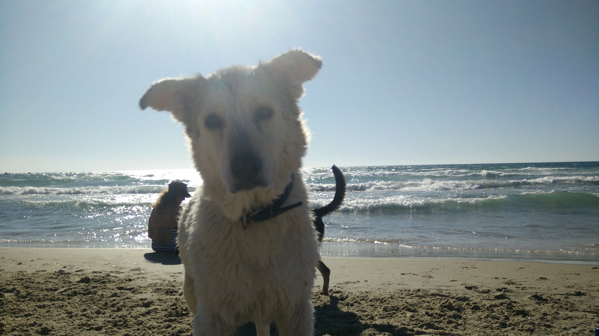
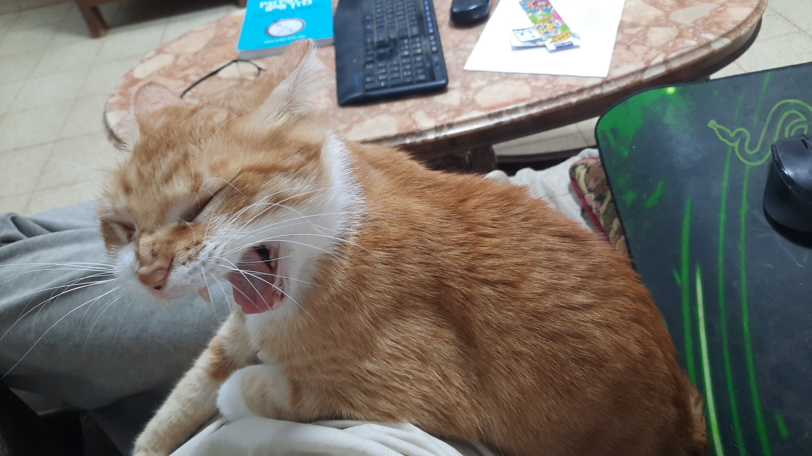
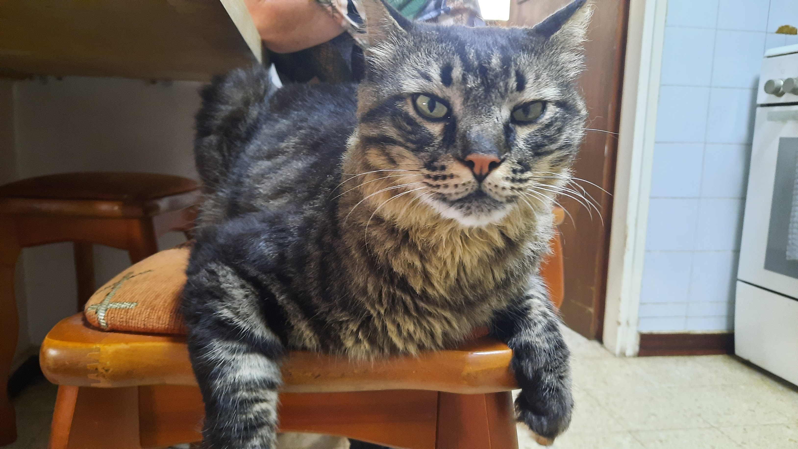

About Me
| My Pets |
Contact Me
My Lovely Pets!
Lakshmi
Laskmi is my current Dog, she is mixed with love and care
She was named after the Indian godess of luck and prosperity
She makes weird and funny noises when she is afraid of other dogs

KissKiss
KissKiss is a "Batman" cat
She loves sleeping in my bed and loves to be petted

Felix & Belik
Felix (black-white) and Belik (white) found my home,
Both of them came from another city, they lives in my yard

Lisa (RIP)
Lisa was peaceful and everybody loved her! Even the cats.
She passed away around 2022 and it was sad.
She willbe forever remembered.

Rijik (RIP)
Rijik was a special cat, he got sick more than the others,
After 8 years he passed away, he will be forever missed.

Seroja
Technically my mom's cat, but I wanted to include him because he is awesome!
